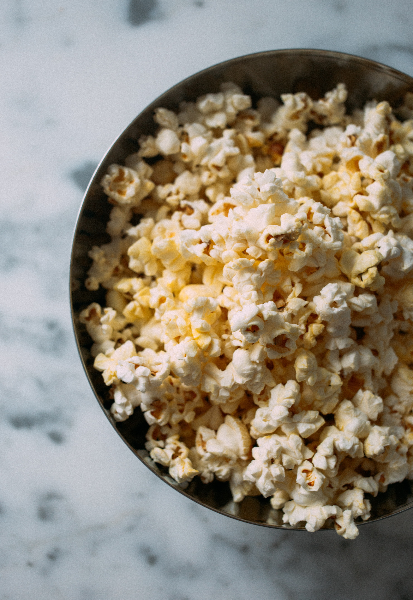

Ingredients
- 3 tablespoons coconut oil or extra virgin olive oil
- 1/3 cup high quality popcorn kernels
- 1 tablespoon butter or more to taste, optional
- Salt to taste
Directions
- Heat the oil in a 3-quart thick-bottomed saucepan on medium high heat. If you are using coconut oil, allow all of the solid oil to melt.
- Put 3 or 4 popcorn kernels into the oil, wait for the popcorn kernels to pop.
- When the kernels pop, add the rest of the 1/3 cup of popcorn kernels in an even layer
- This method first heats the oil to the right temperature, then waiting 30 seconds brings all of the other kernels to a near-popping temperature so that when they are put back on the heat, they all pop at about the same time.
- The popcorn should begin popping soon, and all at once. Once the popping starts in earnest, gently shake the pan by moving it back and forth over the burner.
- Remove the lid and dump the popcorn immediately into a wide bowl.
- If you are adding butter, you can easily melt it by placing the butter in the now empty, but hot pan.
- Fun toppings for the popcorn: Spanish smoked paprika, nutritional yeast, cayenne powder, chili pepper, curry powder, cumin, grated Parmesan cheese.